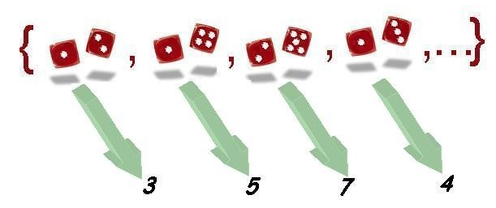
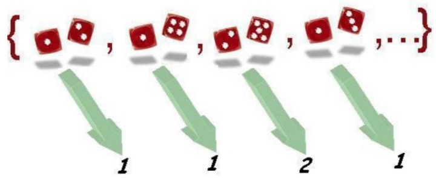
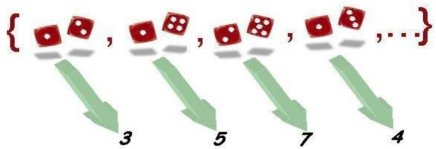
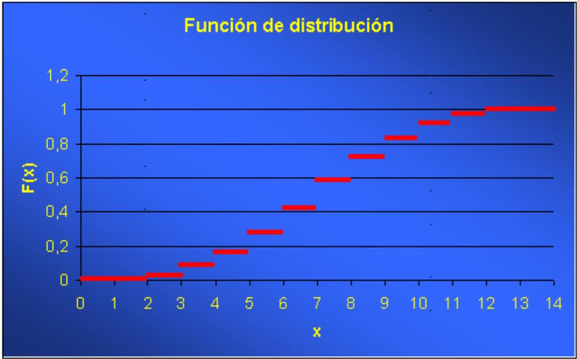
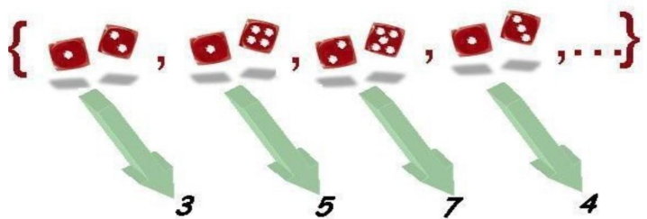

Capítulo 3 Caso práctico: Lanzamiento de dos dados
3.1 Espacio muestral
Supongamos que estamos realizando un experimento consistente en el lanzamiento simultáneo de dos dados y en la observación del resultado obtenido.
El conjunto de resultados posibles forma el espacio muestral \(\Omega\) asociado a dicho experimento. Sus elementos serán como los que se muestran a continuación:
En total, el espacio muestral estaría formado por 36 resultados posibles que, en principio y suponiendo los dados regulares, son todos ellos equiprobables con probabilidad \(1 / 36\).
Nótese que consideramos diferentes resultados del tipo: un uno en el primer dado y un dos en el segundo o un dos en el primer dado y un uno en el segundo.
Una vez fijados los enunciados anteriores, es fácil asignar probabilidades a diferentes sucesos observables, por ejemplo:
| Suceso | Probabilidad |
|---|---|
| Que aparezcan dos cifras iguales | \(6 \cdot 1 / 36=1 / 6\) |
| Que la suma sea 10 | \(3 \cdot 1 / 36=1 / 12\) |
No entramos en detalles de la obtención de las probabilidades dado que se ha estudiado suficientemente en el tema anterior.
3.2 Representación numérica
Continuando con el experimento anterior, podemos representar los resultados obtenidos al lanzar dos dados por valores numéricos. ¿Cómo hacerlo? Definiendo una regla de asignación numérica para cada resultado.
Una posible regla sería, por ejemplo, asignar a cada resultado la suma de puntos de las caras. Este enunciado nos define una variable que representa cada suceso elemental por un valor numérico.

Los 36 posibles resultados del experimento se transforman en 11 posibles valores numéricos para la variable: \(2,3,4,5,6,7,8,9,10,11\) y 12 .
Este conjunto de valores forman el recorrido de la variable suma de puntos de las caras. A partir de las probabilidades definidas sobre los sucesos observables es fácil extender las probabilidades a los diferentes resultados de la variable.
Por ejemplo, la probabilidad de que la variable tome el valor 10 es equivalente a la probabilidad del suceso observable que la suma sea 10 , calculada anteriormente e igual a \(1 / 12\).
La variable considerada hasta el momento es sólo una de las múltiples variables que podríamos definir sobre el mismo experimento. Por ejemplo, podemos estar interesados no en la suma de puntos sino en el punto más bajo de cada tirada, de forma que podríamos construir una nueva variable a partir del enunciado o regla de asignación asignar a cada resultado el menor de los puntos de las dos caras. Tenemos una nueva variable sobre el mismo espacio anterior.

El recorrido, en este caso, está formado por los valores: \(1,2,3,4,5\) y 6 . Las dos variables estudiadas y otras muchas que se podrían definir sobre este experimento son ejemplos absolutamente equivalentes desde el punto de vista formal.
3.3 Algunas probabilidades
En el ejemplo de los dados vamos a centrarnos en la variable aleatoria
\[ X=\text { Suma de puntos de las caras } \]

El recorrido de la variable está formado por los números \(\{2,3,4,5,6,7,8,9,10,11\) i 12\(\}\). Vamos a calcular algunas probabilidades:
- \(P(X \leq 1)=P\{\varnothing\}=0\) (Ningún resultado tiene asignado un valor menor o igual a 1)
- \(P(X \leq 2)=P\{(1,1)\}=1/36\) (Sólo hay un caso al que se le asigne un valor inferior o igual a 2).
- \(P(X \leq 3.5)=P\{(1,1), (1,2), (2,1)\}=3/36\) (Tres resultados elementales tienen asignado un valor menor o igual a 3.5)
Ahora podéis intentar calcular por vosotros mismos algunas probabilidades: (a) \(P(X \leq 6)\) (b) \(P(X \leq 8,2)\); (c) \(P(X \leq 12)\); (d) \(P(X \leq 20)\) i (e) \(P(2,2<X \leq 7)\)
3.4 Función de distribución
Para calcular la función de distribución de la variable X \(=\) Suma de puntos de las caras :

necesitamos conocer el recorrido de la variable, que es: \(\{2,3,4,5,6,7,8,9,10,11, 12\}\) y, utilizando este recorrido como pauta, determinar para todo punto \(x\) de la recta real la probabilidad \(P(X \leq x)\).
En nuestro ejemplo:
\[ F(x)=P(X \leq x)= \begin{cases}0 & x<2 \\ 1 / 36 & 2 \leq x<3 \\ 3 / 36 & 3 \leq x<4 \\ 6 / 36 & 4 \leq x<5 \\ 10 / 36 & 5 \leq x<6 \\ 15 / 36 & 6 \leq x<7 \\ 21 / 36 & 7 \leq x<8 \\ 26 / 36 & 8 \leq x<9 \\ 30 / 36 & 9 \leq x<10 \\ 33 / 36 & 10 \leq x<11 \\ 35 / 36 & 11 \leq x<12 \\ 36 / 36=1 & x \geq 12\end{cases} \]
Acabamos de construir la función de distribución de la variable suma de la puntuación al lanzar dos dados.
Vamos a ver su representación gráfica:

Ejercicio : Haced lo mismo para la variable aleatoria el menor de los puntos de las dos caras al lanzar dos dados.
3.5 Clasificación de las variables
En el experimento que estamos considerando, lanzar simultáneamente dos dados, cualquiera de las dos variables aleatorias que hemos considerado hasta el momento:
\[ X=\text {Suma los puntos de las dos caras } \]
\[ Y=\text { El menor de los puntos de las dos caras } \]
se clasifican dentro del tipo de variables aleatorias discretas, puesto que en ambos casos el recorrido es finito: \(\{2,3,4,5,6,7,8,9,10,11, 12\}\) para la variable \(X\) y \(\{1,2,3,4,5, 6\}\) para la variable \(Y\).
También son discretas aquellas variables aleatorias con recorrido infinito numerable.
Ejercicio: ¿Sabríais construir una variable aleatoria discreta con recorrido infinito numerable basada en el experimento que consiste en el lanzamiento de dos dados?
3.6 Función de densidad discreta
Para calcular la función de densidad de la variable
\[ X=\text { suma de puntos de las caras } \]

necesitamos conocer el recorrido de la variable, es decir: \(\{2,3,4,5,6,7,8,9,10,11, 12\}\) y, a partir del recorrido, determinar para todo punto del recorrido la probabilidad \(P(X=x)\).
En nuestro ejemplo
\[ f(x)=P(X=x)= \begin{cases}1 / 36 & x=2 \\ 2 / 36 & x=3 \\ 3 / 36 & x=4 \\ 4 / 36 & x=5 \\ 5 / 36 & x=6 \\ 6 / 36 & x=7 \\ 5 / 36 & x=8 \\ 4 / 36 & x=9 \\ 3 / 36 & x=10 \\ 2 / 36 & x=11 \\ 1 / 36 & x=12\end{cases} \]
Acabamos de construir la función de densidad de la variable suma de la puntuación al lanzar dos dados.
Vamos a ver su representación gráfica:

Hemos optado por la representación con barras en lugar de puntos para permitir una visualización de la función óptima.
Ejercicio: Haced lo mismo para la variable aleatoria el menor de los puntos de las dos caras al lanzar dos dados.
3.7 Probabilidad de intervalos
Vamos a centrarnos en la variable
\[ X=\text { Suma de puntos de las caras } \]
Las funciones de distribución y de densidad son, respectivamente,
\[ F(x)=P(X \leq x)=\left\{\begin{array}{ll} 0 & x<2 \\ 1 / 36 & 2 \leq x<3 \\ 3 / 36 & 3 \leq x<4 \\ 6 / 36 & 4 \leq x<5 \\ 10 / 36 & 5 \leq x<6 \\ 15 / 36 & 6 \leq x<7 \\ 21 / 36 & 7 \leq x<8 \\ 26 / 36 & 8 \leq x<9 \\ 30 / 36 & 9 \leq x<10 \\ 33 / 36 & 10 \leq x<11 \\ 35 / 36 & 11 \leq x<12 \\ 36 / 36=1 & x \geq 12 \end{array} \quad f(x)=P(X=x)= \begin{cases}1 / 36 & x=2 \\ 2 / 36 & x=3 \\ 3 / 36 & x=4 \\ 4 / 36 & x=5 \\ 5 / 36 & x=6 \\ 6 / 36 & x=7 \\ 5 / 36 & x=8 \\ 4 / 36 & x=9 \\ 3 / 36 & x=10 \\ 2 / 36 & x=11 \\ 1 / 36 & x=12\end{cases}\right. \]
Puede observarse cómo los valores de la función de distribución se obtienen acumulando los valores de la función de densidad correspondientes.
Vamos a calcular algunas probabilidades utilizando las funciones anteriores. Compárese con los resultados obtenidos con anterioridad basados directamente en los resultados elementales.
- \(P(X \leq 1)=F(1)=0\)
- \(P(X \leq 3,5)=F(3,5)=3 / 36=f(2)+f(3)\)
- \(P(X<6)=F(6)-f(6)=15 / 36-5 / 36=10 / 36=f(2)+f(3)+f(4)+f(5)\)
- \(P(2,2<X \leq 7)=F(7)-F(2,2)=21 / 36-1 / 36=20 / 36=f(3)+f(4)+f(5)+f(6)+f(7)\)
- \(P(2<X<7)=F(7)-f(7)-F(2)=21 / 36-6 / 36-1 / 36=14 / 36=f(3)+f(4)+f(5)+f(6)\)
3.8 Esperanza
Supongamos que estamos interesados en determinar cual sería el valor medio teórico de la variable
\[ X=\text { Suma de puntos de las caras } \]
La función de densidad es:
\[ f(x)=P(X=x)= \begin{cases}1 / 36 & x=2 \\ 2 / 36 & x=3 \\ 3 / 36 & x=4 \\ 4 / 36 & x=5 \\ 5 / 36 & x=6 \\ 6 / 36 & x=7 \\ 5 / 36 & x=8 \\ 4 / 36 & x=9 \\ 3 / 36 & x=10 \\ 2 / 36 & x=11 \\ 1 / 36 & x=12\end{cases} \]
La misma función de densidad nos da información sobre el recorrido de la variable. Calcular el valor medio teórico de la variable quiere decir calcular la esperanza. A partir de la fórmula de la esperanza para variables discretas, tenemos
\[ \begin{aligned} E(X) &=2 \cdot 1 / 36+3 \cdot 2 / 36+4 \cdot 3 / 36+5 \cdot 4 / 36+6 \cdot 5 / 36+\\ & + 7 \cdot 6 / 36+8 \cdot 5 / 36+9 \cdot 4 / 36+\\ &+ 10 \cdot 3 / 36+ 11 \cdot 2 / 36+12 \cdot 1 / 36=\\ & =7 \end{aligned} \]
Por tanto, 7 es la esperanza de la variable \(X=\) Suma de puntos de las caras. Fijaos que la esperanza para la variable Puntuación de un dado sería
\[ 1 \cdot 1 / 6+2 \cdot 1 / 6+3 \cdot 1 / 6+4 \cdot 1 / 6+5 \cdot 1 / 6+6 \cdot 1 / 6=3,5 \]
y que se puede considerar la variable Suma de puntos de las dos caras como la suma de dos variables que representen la puntuación de cada dado. La esperanza de la suma es, efectivamente, la suma de las esperanzas de cada variable sumada.
En la aplicación siguiente, podéis calcular la esperanza de la variable Puntuación de un dado y modificar las probabilidades de las diferentes caras, de este modo se modifica la esperanza.
Ejercicio: ¿Podríais hacer lo mismo para la variable \(X=\) El menor de los puntos de las dos caras al lanzar dos dados?
3.9 Esperanza de un juego
Imaginemos que alguien os propone el juego siguiente: lanzad dos dados, si la suma obtenida es menor o igual a 6 ganáis 100 euros, sin embargo, si la suma obtenida es mayor que 6 tenéis que pagar 100 euros. ¿Nos conviene jugar a este juego?
Veamos, podemos considerar el resultado del juego como una variable aleatoria discreta que toma dos valores: +100 si ganamos y -100 si perdemos. Nos interesa conocer las probabilidades de los diferentes resultados. Consideremos la variable \(X=\) Suma de puntos de las caras, cuya función de densidad conocemos:
\[ f(x)=P(X=x)= \begin{cases}1 / 36 & x=2 \\ 2 / 36 & x=3 \\ 3 / 36 & x=4 \\ 4 / 36 & x=5 \\ 5 / 36 & x=6 \\ 6 / 36 & x=7 \\ 5 / 36 & x=8 \\ 4 / 36 & x=9 \\ 3 / 36 & x=10 \\ 2 / 36 & x=11 \\ 1 / 36 & x=12\end{cases} \]
A partir de aquí es fácil ver que la función de densidad de la variable \(Y=\) Resultado del juego será la siguiente:
\[ f(100)=15 / 36 ; f(-100)=21 / 36 \]
Por tanto, la esperanza del juego, que puede ser interpretada como la ganancia media por jugada, será
\[ E(Y)=100 \cdot 15 / 36-100 \cdot 21 / 36=-100 / 6 \approx-16,667 \]
Es decir, la ganancia media por jugada es negativa, por tanto no es favorable dicho juego para el jugador, es un juego no equitativo.
3.10 Esperanza con recorrido infinito
Vamos a tratar de calcular la esperanza de la siguiente variable aleatoria: \(X=\) Número de lanzamientos que hemos de hacer para conseguir que aparezca un doble seis La variable que acabamos de definir es una variable discreta con recorrido infinito numerable. El recorrido sería el siguiente:
\[ \{1,2,3,4, \ldots\} \]
Vamos a ver como calculamos la función de densidad: \(P(X=1)=\) Probabilidad de que aparezca un doble seis en el primer lanzamiento \(=1 / 36\) \(P(X=2)=\) Probabilidad de que el doble seis no aparezca en el primer lanzamiento y sí en el segundo = \(35 / 36 \cdot 1 / 36=35 / 36^{2}\) \(P(X=3)=\) Probabilidad de que el doble seis no aparezca ni en el primer ni en el segundo lanzamientos y sí en el tercero \(=35 / 36 \cdot 35 / 361 / 36=35^{2} / 36^{3}\)
En general, \(P(X=k)=35^{k-1} / 36^{k}\) Para simplificar, vamos a llamar \(p=1 / 36\) y \(q=1-p=35 / 36\), con esta nomenclatura \(P(X=\mathrm{k})=q^{k-1} p\). Por tanto, la esperanza será:
\[ \begin{aligned} E(X)& =\sum_{i=1}^{\infty} i q^{i-1} p=p \sum_{i=1}^{\infty} i q^{i-1}=p \frac{d}{d q} \sum_{i=1}^{\infty} q^{i}= \\ &= p \frac{d}{d q}\left(\frac{q}{1-q}\right)=p \frac{1}{(1-q)^{2}}=\\ & = \frac{1}{p} \end{aligned} \]
En nuestro ejemplo el número medio de tiradas antes de salir un doble seis será 36 .
3.11 Esperanza infinita
Ahora calcularemos la esperanza del juego siguiente: lanzamos un dado hasta que aparece un número par, el jugador gana \(2^{n}\) unidades monetarias si aparece un número par por primera vez en la tirada nésima.
El recorrido de la variable aleatoria \(X=\) Ganancia del juego, está formado por todos los números de la forma \(2^{n}\) con \(n=1,2,3, \ldots\) La probabilidad de cada valor del recorrido es la probabilidad de que aparezca un número par por primera vez en la tirada nésima, es decir \((1 / 2)^{n-1} \cdot(1 / 2)=(1 / 2)^{n}\). Por tanto, la esperanza del juego es la siguiente:
\[ E(X)=\sum_{n=1}^{\infty} 2^{n}(1 / 2)^{n}=\sum_{n=1}^{\infty} 1=\infty \]
Como vemos, la variable aleatoria \(X\) no tiene esperanza finita. El enunciado presentado es una versión del problema presentado alrededor de 1730 por el matemático Daniel Bernouilli a la Academia de San Petersburgo y conocido como la paradoja de San Petersburgo, dado que la esperanza del juego es aparentemente infinita.
3.12 Varianza
Si ahora queremos calcular la varianza de la variable
\[ X=\text { Suma de puntos de las caras } \]
con función de densidad:
\[ f(x)=P(X=x)= \begin{cases}1 / 36 & x=2 \\ 2 / 36 & x=3 \\ 3 / 36 & x=4 \\ 4 / 36 & x=5 \\ 5 / 36 & x=6 \\ 6 / 36 & x=7 \\ 5 / 36 & x=8 \\ 4 / 36 & x=9 \\ 3 / 36 & x=10 \\ 2 / 36 & x=11 \\ 1 / 36 & x=12\end{cases} \]
Podemos aplicar la fórmula
\[ \operatorname{Var}(X)=E\left(X^{2}\right)-(E(X))^{2} \]
La esperanza ya la tenemos calculada con anterioridad
\[ \begin{aligned} E(X) & =2 \cdot 1 / 36+3 \cdot 2 / 36+4 \cdot 3 / 36+5 \cdot 4 / 36+\\ & +6 \cdot 5 / 36+7 \cdot 6 / 36+8 \cdot 5 / 36+9 \cdot 4 / 36+\\ & +10 \cdot 3 / 36+ 11 \cdot 2 / 36+12 \cdot 1 / 36=\\ & =7 \end{aligned} \]
Necesitamos calcular la esperanza de la variable al cuadrado, que en este caso resulta:
\[ \begin{aligned} E\left(X^{2}\right)& =2^{2} \cdot 1 / 36+3^{2} \cdot 2 / 36+4^{2} \cdot 3 / 36+5^{2} \cdot 4 / 36+6^{2} \cdot 5 / 36+\\ & + 7^{2} \cdot 6 / 36+8^{2} \cdot 5 / 36+9^{2} \cdot 4 / 36+ 10^{2} \cdot 3 / 36+\\ & + 11^{2} \cdot 2 / 36+12^{2} \cdot 1 / 36=329 / 6 \\ &\approx 54,833 \end{aligned} \]
Con lo que la varianza resulta ser
\[ \operatorname{Var}(X)=329 / 6-7^{2}=35 / 6 \approx 5,833 \]
Nuevamente, para la variable Puntuación de un dado, la varianza se obtendría de la manera siguiente:
\[ \begin{aligned} E(X)& =1 \cdot 1 / 6+2 \cdot 1 / 6+3 \cdot 1 / 6+4 \cdot 1 / 6+5 \cdot 1 / 6+6 \cdot 1 / 6= \\& =3,5\\ E \left(X^{2}\right)&=1^{2} \cdot 1 / 6+2^{2} \cdot 1 / 6+3^{2} \cdot 1 / 6+4^{2} \cdot 1 / 6+\\ & + 5^{2} \cdot 1 / 6+6^{2} \cdot 1 / 6=91 / 6\\ & \approx 15,167 \\ \operatorname{Var}(X)&=91 / 6-3,5^{2}=35 / 12 \approx 2,9167 \end{aligned} \]
y se cumple que la varianza de la variable Suma de puntos de las dos caras es la suma de las varianzas de las puntuaciones de cada dado por separado. Recordemos que esto sólo sucede si las variables sumadas son independientes, como así ocurre con las puntuaciones de cada dado por separado.